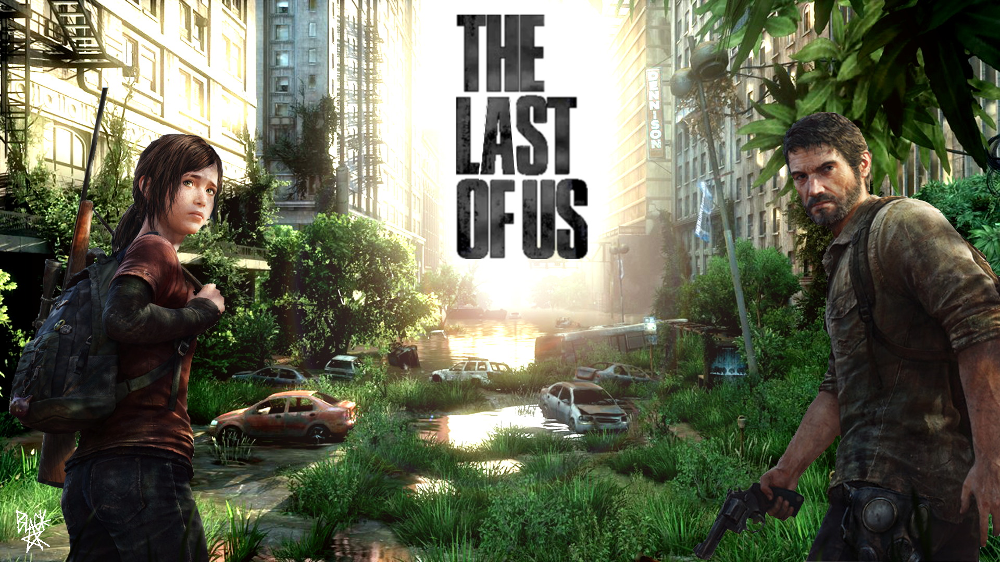

Song King
About Me
Hi! I'm Song King, a child actress turned professional figure skater turned soul-searcher. My current life calling is that of a Computer Science student at UC Berkeley, with an interest in mobile development, game programming, and user interface design. I aspire to be a world traveler, to both the majestic cities across the globe as well as the well-developed fictional lands found in novels, games, and movies. My notebook is full of short stories of a once-aspiring writer and random ponderings about time, space, and the infinite universe. I frequent music festivals, where art, music, and culture come together to be experienced by the open-minded. I've also recently picked up archery and weight-lifting in order to better prepare myself for a zombie apocalypse. Everyday is a new day, which means an opportunity to try something new.
My Projects
Cross Platform Demo App
Electronic Arts
During my internship at EA during the summer of 2013, I (along with a co-intern, Jerry Chen) produced a cross-platform game that replicated Atari Breakout in C++ using Cocos-2DX. Through the integration of EA's new internal SDK, the app had further capabilities such as micro-transactions, push notifications, Facebook, and tracking. The app was released as part of the SDK package to game teams to assist in the integration of the SDK.
Berkeley Street Cleaning iOS App
In Progress
This iOS app will remind you that there is street cleaning on bookmarked streets as well as streets within a certain radius from your phone's geolocation. The inspiration for the app would be the absurdly high number of parking tickets I've received since having my car in Berkeley.
My Interests
Figure Skating
Figure Skating has always been the dearest thing in my heart. I began my skating career at the age of 4, forgoing a "normal" childhood to pursue my dreams of an Olympic Gold Medal. A few of my achievements include placing 5th at the 2008 US Figure Skating National Championships in St. Paul, Minnesota, being placed on the 2014 Olympics Development Team; winning two gold medals at ISI Worlds (2010); placing 9th at the 2009 Pacific Coast Sectionals in Jackson Hole, Wyoming; winning the silver at the US National Showcase Parade of Champions (2007); and winning the Tai Babilonia Perpetual Award (), Jennifer Ritter Perpetual Award, and the Joanne Funakoshi Perpetual Award () at the LAFSC Showcase for Skaters. |
|
| Unfortunately, after sustaining just too many injuries (5 broken legs, a shattered foot, chronic tendonitis, chronic bursitis, juvenile arthritis), I realized my body just could not handle the sport any longer. So with a heavy heart, I hung up my skates for good at age 17. I'd be lying if I said that there isn't a day that I don't miss being on the ice; but I also don't regret taking steps in ensuring a long, healthy future for myself. I am glad to have come as close to my Olympic dream as I did. And I will be forever in debt to those who invested in me and often times believed in me more than I did myself (my parents, my brother Wind, and the two best coaches in the entire world, Tiffany Chin and Alex Chang). |
My parents put me into acting at age 4 because I was such a dramatic child and because I was just too gosh-darn-cute. It was never something that I took too seriously; I just thought it was fun. And I absolutely loved that I was good at it. I starred in a number of commercials including Kraft Cheese American Singles, Barbie, Toys for Tots, Disneyland, Scott Paper Towels, and Long John Silvers. I even appeared in an episode of The Amanda Show. I had to quit because balancing school, acting auditions, and skating practices proved to be a little too much for me and my family. To this day, I still enjoy casually acting; I am a declared Theater and Performance Studies minor at UC Berkeley. |
Last Game Played: The Last of Us on Playstation 3. |
 |